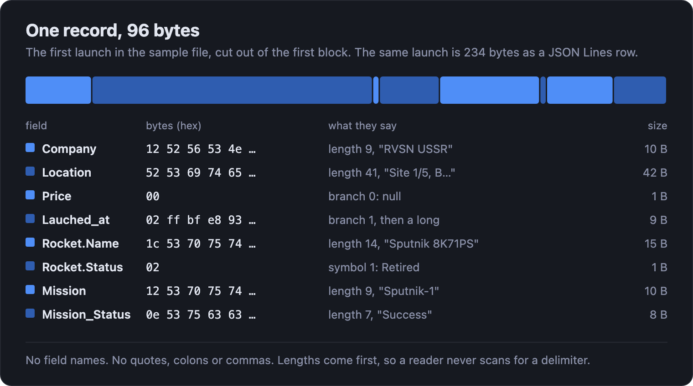
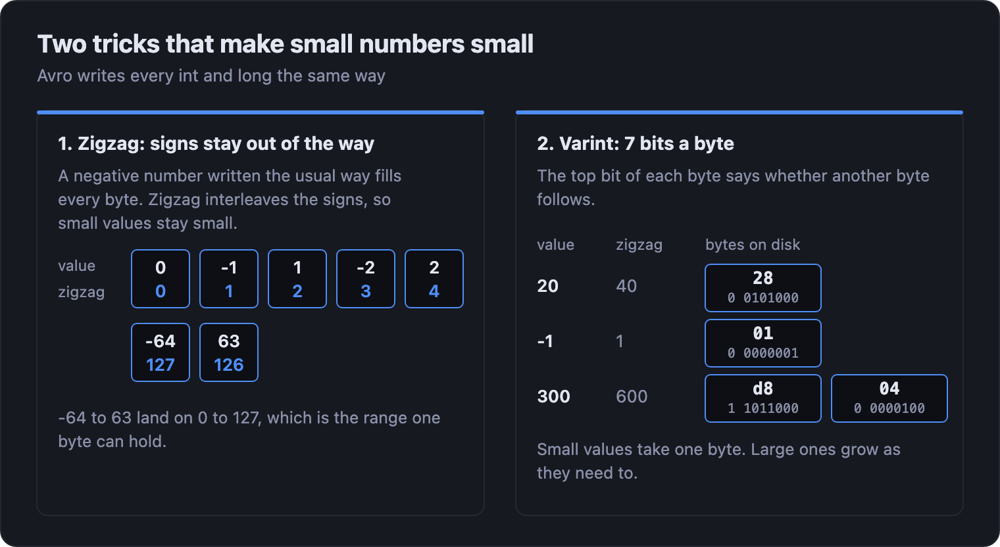
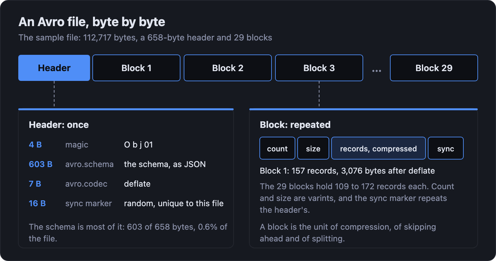
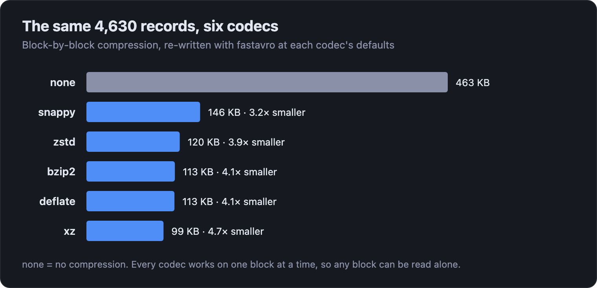
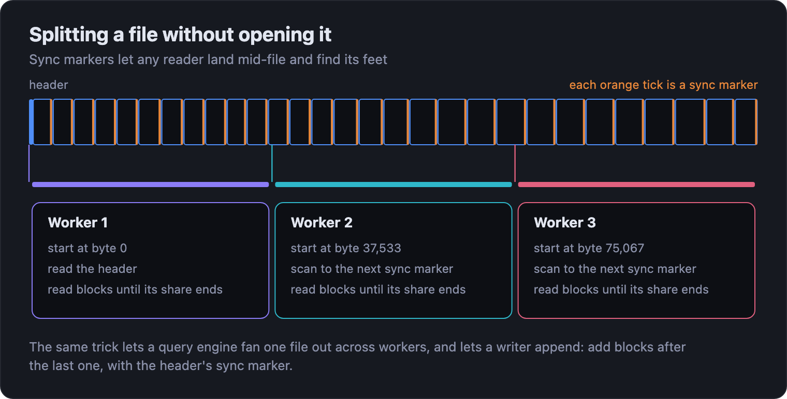
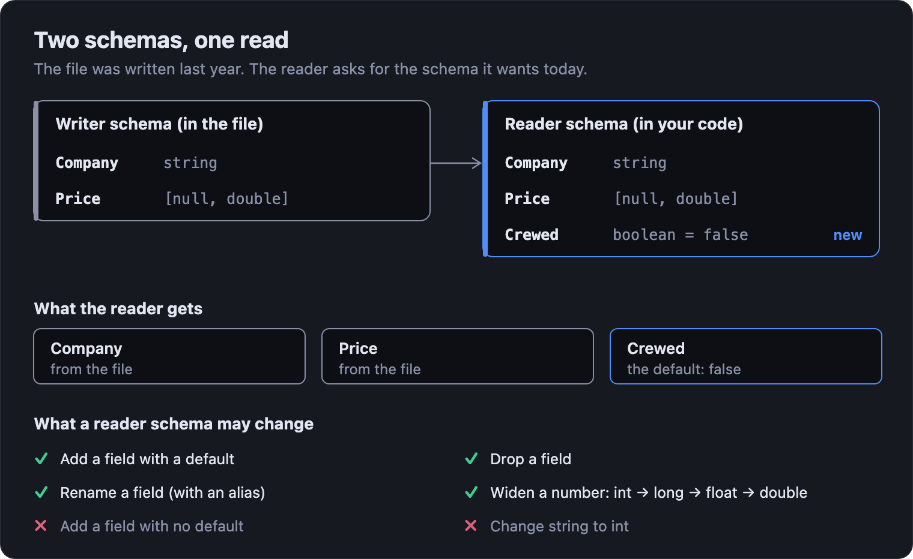
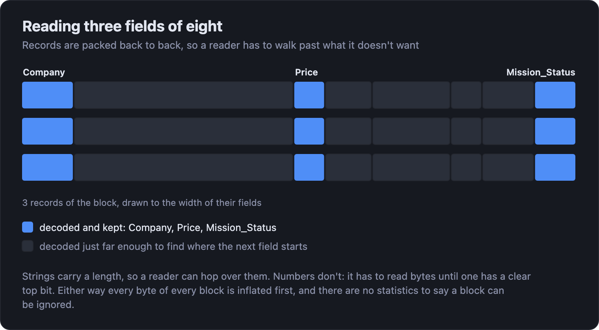

Understanding Avro: the file format built for moving data
Correct at time of publishing. For up-to-date performance and feature information, see rugo.dev.
The first rocket launch in our dataset, Sputnik-1, takes 234 bytes as a line of JSON and 96 bytes as Avro. Nothing in those 96 bytes says what a field is called or where it ends, and any program that holds the schema can still read it back exactly. That trade, a schema in exchange for bytes, is most of what Avro is.
Avro started in 2009 inside the Hadoop project, and it has kept the job it was built for: moving records between systems that are written, deployed and upgraded separately. It's what you meet in event streams, in message queues, and in the landing zone where raw data arrives before it's tidied into something else.
In an earlier post we put Avro next to Parquet and JSON Lines. This one opens Avro up. We'll take a single record, then a file, then a schema change, and look at the bytes each time. The data is the same 4,630 orbital launch attempts, and the file is in the rugo.dev repository if you want to follow along.
It starts with a schema
Every Avro file is described by a schema, and the schema is plain JSON. Here's the one for our launches, trimmed to its shape:
{
"type": "record", "name": "Launch",
"fields": [
{"name": "Company", "type": "string"},
{"name": "Price", "type": ["null", "double"]},
{"name": "Lauched_at", "type": ["null", {"type": "long", "logicalType": "timestamp-micros"}]},
{"name": "Rocket", "type": {"type": "record", "name": "Rocket", "fields": [
{"name": "Name", "type": "string"},
{"name": "Status", "type": {"type": "enum", "name": "RocketStatus",
"symbols": ["Active", "Retired"]}}
]}},
{"name": "Mission", "type": "string"}
]
}
There are two layers of types. The base layer is small:
null, boolean,
int, long, float,
double, bytes and
string, plus the containers
record, enum,
array, map,
union and fixed. On top sit
logical types: a name that says what a stored
value means. A timestamp-micros is a
long counting microseconds. A
decimal is bytes. Readers that know the
logical type hand you a timestamp or a decimal, and
readers that don't still get the long or the bytes.
Two of those types carry more weight than they look. A
union is how Avro says "or", and a union
with null is how it says "optional":
["null", "double"] is a price that may be
missing. A record can hold other records,
so nested data keeps its shape instead of being flattened
into Rocket_Name and
Rocket_Status.
What 96 bytes say
Here is the first record in the file, cut out of the first block and read byte by byte.

Read down the table and the whole encoding is there. A
string is its length, then its UTF-8 bytes. The
12 in front of "RVSN USSR" is 9, the length,
written the way Avro writes every integer (the next section
explains that). The union in Price is a single
byte, 00, which names branch 0, the
null, and has no value after it. In
Lauched_at the branch is
02, branch 1, and a long follows. The enum is
the position of its symbol: 02 is 1, which is
"Retired".
What isn't there is as important. There are no field names, because the schema has them. There are no field numbers or type tags, which is where Avro parts ways with formats like Protocol Buffers: the fields appear in the order the schema lists them, and that order is the only index. And there are no delimiters. Every length comes first, so a reader never scans for a quote or a comma.
The cost of that is stated plainly in the spec: you can't read the data without the schema it was written with. Everything else about Avro, from the file header to schema registries, is a way of making sure the schema arrives with the bytes.
Small numbers stay small
Integers are where the saving is easiest to see. Avro
writes every int and long with
the same two ideas, and both appear in the record above.

Zigzag deals with the sign. A negative number written the usual way sets its top bits and needs every byte, so Avro interleaves the signs instead: 0, -1, 1, -2, 2 become 0, 1, 2, 3, 4. A number near zero stays near zero whichever side it's on. Varint then writes it seven bits at a time, with the top bit of each byte saying whether another byte follows. Anything from -64 to 63 fits in one byte, -8,192 to 8,191 in two, and so on, so a number only ever takes the bytes it needs.
That's why a string's length costs one byte, why the
nullable price costs one byte when it's missing, and why a
row with a lot of small counters and flags comes out so
much smaller than its text. A double is the
exception: it's always eight bytes, just as a
float is always four.
A file is a header, then blocks
A single record isn't a file. The Avro container file wraps a stream of records so that it can be read, split and appended to.

The header opens with four bytes, Obj and a
version, then a small map of metadata: the schema, under
the key avro.schema, and the codec, under
avro.codec. It ends with a 16-byte random
sync marker. In our file the schema is 603
of the header's 658 bytes, and the header is 0.6% of the
file, which is why carrying the schema with the data is
affordable.
After the header come the blocks, and every block has the same four parts: how many records it holds, how many bytes it takes, the records themselves, and the sync marker again. fastavro, which wrote this file, fills a block with about 16 KB of records, compresses it, and starts the next. Our 4,630 launches land in 29 blocks of 109 to 172 records, each taking 3 to 5 KB on disk.
Compression happens one block at a time
The codec named in the header applies to every block. The
spec requires two, none (which the spec spells
null) and
deflate, and allows others: Snappy, zstd,
bzip2 and xz are the common ones.

Before any compression, the Avro file is already 2.4× smaller than the JSON Lines one: 463 KB against 1.09 MB. That's the encoding at work, keys and quotes and text numbers gone. Deflate then takes it another 4.1× down to the 113 KB file in the repository. Snappy gives up some of that size for speed, xz gives up speed for size, and deflate is the one every Avro library must be able to read, which is why it's the safe default for files other people will open.
Because each block is compressed on its own, the codec never has to look outside it. Any block can be inflated without its neighbours, and that's what makes the next two properties possible.
Splitting and appending
The sync marker is a boundary you can find without parsing. A reader dropped into the middle of a file scans forward until it sees the 16 bytes, and from there it's on a block edge and can read normally.

That makes an Avro file splittable. A query engine can cut a large file into byte ranges, give each range to a different worker, and trust every worker to find its first whole block. It also makes the file appendable. A writer reads the header for the schema, codec and sync marker, then adds new blocks after the last one. No footer has to be rewritten, because there isn't one.
Schema evolution
Here is the reason Avro is the format between services. Producers and consumers upgrade on different days, and the data written by one version has to be readable by another.
Avro's answer is to give a reader two schemas: the writer's, which came out of the file's header, and the reader's, which is the shape your code wants today. The reader resolves one against the other by field name.

The rules are short. A field the reader wants and the file
has is read. A field the reader wants and the file doesn't
have takes its declared default. A field the file has and
the reader doesn't want is skipped. Numbers can widen, from
int up to long,
float and double, and a field can
be renamed if the new schema lists the old name as an alias.
What can't happen is a field with no default appearing from
nowhere, which is why give every new field a
default is the one rule to remember.
Nothing in the file changes. The same bytes serve every reader schema, and all the work happens when the file is read. In rugo it's one argument:
from rugo import avro reader_schema = { "type": "record", "name": "Launch", "fields": [ {"name": "Mission", "type": "string"}, {"name": "Price", "type": ["null", "double"], "default": None}, {"name": "Crewed", "type": "boolean", "default": False}, # not in the file ], } with avro.read_avro("space_missions.avro", reader_schema=reader_schema) as reader: for morsel in reader: print(morsel.column_names, morsel.column("Crewed").to_pylist()[:3])
The file was written before Crewed existed. All 4,630 rows come back with it set to False, and the fields the reader schema leaves out are dropped.
What Avro doesn't do
Everything above comes from storing rows. The cost is the flip side of it. An Avro block holds a record count and a byte size, and that's all it says about its contents. There are no minimums and maximums, no per-field offsets, and no index.

So a reader that wants three fields of eight still inflates every block and walks every record. A string can be hopped over by its length. A number can't, because its size is in its own top bits, so the reader reads until it finds the end. A good reader never turns the unwanted fields into values, and that's a large saving. But it can't skip a block, because nothing says the block can be skipped.
That is the line between Avro and Parquet, and it's a fair one. Avro is built for writing one record at a time and for reading whole records. When the question is "how many launches did SpaceX fly?" over a billion rows, a columnar format wins by not reading the answer's neighbours. When the job is carrying each launch from one system to the next, Avro wins by not caring.
Avro without a file
Most Avro that crosses a network isn't a file at all. A message on a queue is one record, and repeating a 603-byte schema in front of it would cost more than six times the record. So systems send just the record and put the schema somewhere both ends can find it.
The common pattern is a schema registry. A producer registers its schema and gets an ID back, then writes each message as a short prefix (in Confluent's wire format, a zero byte and a four-byte schema ID) followed by the Avro bytes. A consumer reads the ID, fetches the writer schema from the registry once, caches it, and resolves it against its own reader schema. It's the same two-schema idea as the file, with the registry standing in for the header. Avro also defines a self-contained single-object encoding, a marker and an eight-byte fingerprint of the schema ahead of the record, for the same purpose.
When to use Avro
- Records move between systems on different release cycles. Schema evolution is the feature.
- Records arrive one at a time and the file has to keep up. Appending a block is cheap, and there's no footer to protect.
- The data is nested or richly typed. Timestamps, decimals, enums, arrays and maps all have a home, and they arrive as what they are.
- You'll mostly read whole records. Row storage is an advantage there, not a handicap.
And when the data settles in storage and gets queried a few columns at a time, compact it into Parquet. The two formats hand off to each other: Avro at the edge, Parquet at rest.
Where rugo fits
In Python, the usual route into an Avro file is a reader that builds an object for every record. rugo reads Avro blocks into typed columns instead, and only the columns you ask for.
from rugo import avro # Nested fields are addressed with a dot: "Rocket.Name" with avro.read_avro("space_missions.avro", columns=["Company", "Rocket.Name", "Price"]) as reader: for morsel in reader: print(morsel.column_names) print(morsel.column("Rocket.Name").to_pylist()[:2])
That prints the three column names and
['Sputnik 8K71PS', 'Sputnik 8K71PS']. Avro has
no statistics, so there's no predicates
argument as there is for Parquet; you filter the values you
get back. Logical types arrive decoded, enums as their
symbols, and the same morsel feeds the Parquet writer when
it's time to compact.
Reading every field of 200,000 rows, rugo is
7.8× faster than fastavro and
50× faster than Apache's own
avro package. Called from Python it also beat
Apache Arrow's Rust Avro reader in
three of four races. The home page has the
measurements, with versions and hardware.
Try it
pip install rugo is the whole install. The
Avro notebook
runs in your browser on the same 4,630 launches: columns,
nested fields, reader schemas, and a conversion to Parquet.
Reproducing this
Every byte count comes from
docs/data/space_missions.avro, parsed with
nothing but the spec: the 658-byte header, the schema's
603 bytes, the 29 blocks and their record counts and sizes.
The 96-byte record is the first record of the first block,
inflated and split using the schema. The 234 bytes is the
first line of space_missions.jsonl, which
flattens the rocket into two fields where Avro nests it.
The codec sizes come from writing the same 4,630 records
with fastavro 1.13 at each codec's defaults, so the deflate
figure (112,731 bytes) differs from the repository file
(112,717) by a few bytes. The reader-schema example was run
with rugo 0.5.4.
The diagrams are generated by
tools/build_avro_diagrams.py, which parses the Avro file directly.